R Markdown
En el primer taller, lo que hicimos fue abrir un script y trabajar en él. Para escribir un comentario o título en un script, se debe anteponer un # en la línea de código. Trabajar en un script es fácil, pero el trabajo en ellos puede ser confuso para alguien quien no está acostumbrado al lenguaje utilizado en R. Entonces, si queremos que nuestros trabajos sean reproducibles y accesibles, tenemos que pensar en otra forma de mostrar nuestra “área de trabajo”. Por otro lado, R Markdown es utilizado también en el desarrollo de blogs o páginas estáticas en GitHub. Por ese motivo, en este curso de ahora en adelante utilizaremos este formato para avanzar en nuestro trabajo.
Entonces, podemos utilizar R Markdown para:
- Guardar y ejecutar nuestras líneas de código.
- Generar informes de alta calidad que pueden ser compartidos con más personas.
- R Markdown genera distintos tipos de documentos (html, pdf, Words, dashboards, latex, etc.).
- No sólo funciona con el lenguaje R, sino también con otros formatos de códigos como Python.
Si tenemos instalada la librería rmarkdown, crearemos un archivo que nos servirá para avanzar en el taller de hoy:
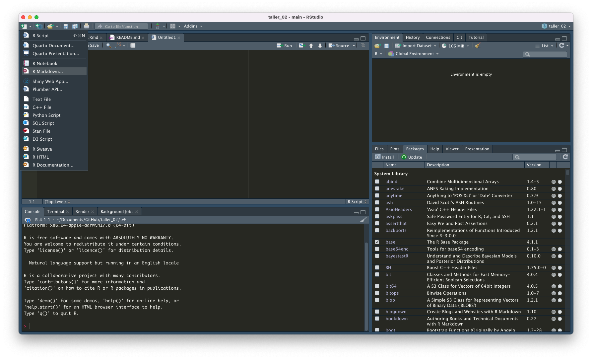
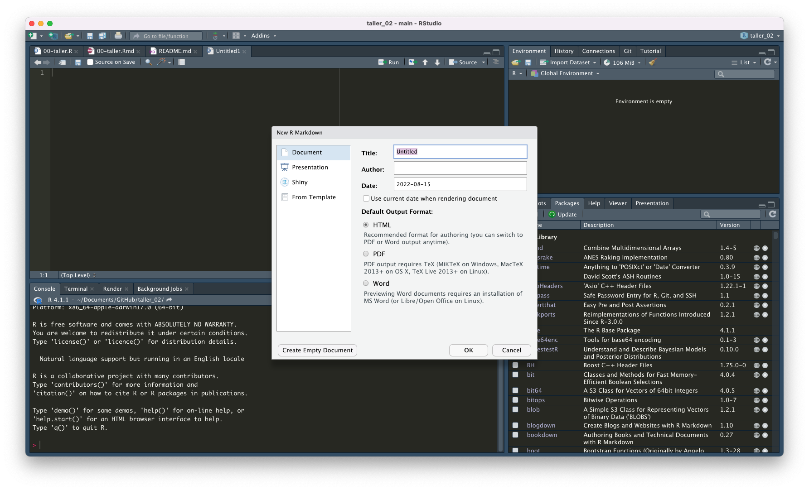
Empezaremos cargando la librería tidyverse:
Opciones que se pueden utilizar en los chunks:
# Si queremos comentar un chunk, debemos tratarlo como un script y anteponer un gato
# Aunque el desarrollo o presentación de tablas aun no está en nuestro itinerario del curso, sí podemos empezar a instalar algunas de las librerías que nos servirán más adelante:
library(knitr)
library(kableExtra)
readxl::read_excel("input/tablas.xlsx") %>%
kable() %>%
kable_styling(bootstrap_options = c("striped", "hover", "condensed"))| Opciones | Descripción |
|---|---|
| include = FALSE | Ni el código ni los resultados aparecerán en el archivo final. |
| echo = FALSE | El código no aparecerá en el resultado final, pero sí sus resultados. |
| message = FALSE | Si el código genera algún mensaje, éste no aparecerá en el archivo final. |
| warning = FALSE | Si el código genera algún warning, éste no aparecerá en el archivo final. |
| fig.cap = “…” | Añade un título a los gráficos. |
tidyverse & ggplot2
ggplot2 es una librería dentro del tidyvere que nos permitirá hacer gráficos personalizables. Está basada en The Grammar of Graphics que propone un trabajo gramatical que puede ser usado para describir y construir una variedad amplia de gráficos estadísticos (para más información: ver A Layered Grammar of Graphics de Hadley Wickham (2010) y The Grammar of Graphics de Wilkinson, Anand y Grossman (2005)). Para que nos hagamos una idea: hacer gráficos requiere de que nosotros/as podamos ir separando cada pieza que lo compone: desde los tipos de variables que estamos utilizando hasta el tipo de letra que debe tener nuestro título. De esa manera, ggplot2 se combierte en una herramienta valiosa para la presentación de resultados.
Las herramientas del tidyverse como lo son filter(), mutate(), summarise() y arrange() son útiles para transformar los datos que necesitaremos graficar. En algunos casos, esta será mínima, en otras tendremos que trabajar para llegar a una base de datos lista para graficar. Algo muy importante es saber diferenciar las bases de datos que son “anchas” de las que son “largas”, porque dependiendo de su caracterización es cómo tendremos que jugar con ellas. Para ese tipo de transformaciones utilizamos pivot_longer() y pivot_wider().
Cargaremos algunas bases de datos que están en la carpeta data:
df_militantes <- readxl::read_excel("data/Estadistica por rango etario año 2016.xlsx")
names(df_militantes) [1] "ESTADISTICA POR RANGO ETARIO AL 31/12/2016"
[2] "...2"
[3] "...3"
[4] "...4"
[5] "...5"
[6] "...6"
[7] "...7"
[8] "...8"
[9] "...9"
[10] "...10"
[11] "...11"
[12] "...12"
[13] "...13"
[14] "...14"
[15] "...15"
[16] "...16"
[17] "...17"
[18] "...18"
[19] "...19" # Si ven la base de datos normal, verán que la primera fila no contiene los nombres de las variables. Por lo tanto, tenemos que cargarla especificando esto:
df_militantes <- readxl::read_excel("data/Estadistica por rango etario año 2016.xlsx", skip = 1)
names(df_militantes) [1] "PARTIDO" "REGION" "COMUNA" "SEXO" "18-19" "20-24"
[7] "25-29" "30-34" "35-39" "40-44" "45-49" "50-54"
[13] "55-59" "60-64" "65-69" "70-74" "75-79" "80+"
[19] "TOTAL" # Si contiene los nombres de las columnas. En R existe el paquete janitor que nos ayuda a limpiar los nombres de las columnas. Los nombres con caracteres especiales siempre dan problemas.
df_militantes <- df_militantes %>%
janitor::clean_names()
names(df_militantes) [1] "partido" "region" "comuna" "sexo" "x18_19" "x20_24"
[7] "x25_29" "x30_34" "x35_39" "x40_44" "x45_49" "x50_54"
[13] "x55_59" "x60_64" "x65_69" "x70_74" "x75_79" "x80"
[19] "total" # Ahora será más fácil escribir las variables.Ahora, tenemos una base que podemos utilizar más fácilmente para codificar.
Exploración de la base de datos
Uno de los primeros pasos siempre es explorar la base de datos. Para eso, tenemos distintas funciones. La función más básica es head() y tail()que nos permite ver la información de los primeros y últimas 10 filas de la base de datos. Después, tenemos str() que nos muestra el formato de las variables.
Pero ¿de qué hablamos cuando hablamos de los formatos de las variables?
Conocer en qué formato están nuestras variables nos hace la vida más fácil, porque nos permite utilizar funciones de acuerdo a su formato, especialmente cuando utilizamos el tidyverse.
readxl::read_excel("input/tablas.xlsx", sheet = "tabla_formatos") %>%
knitr::kable() %>%
kable_styling(bootstrap_options = c("striped")) %>%
column_spec(1, width_min = "3cm", bold = T) %>%
column_spec(2, width_min = "6cm") %>%
column_spec(3, width_min = "3cm") | Tipo | Descripción | Ejemplo |
|---|---|---|
| Logical | Variable binaria | TRUE, FALSE |
| Numeric | Variable numérica que puede ser escriba con fracciones. | 5, 4, 100, 98.67 |
| Integer | Variable numérica que no puede ser escrito en fracción. En otras palabras, números enteros. | 2L, 46L, 0L |
| Complex | Variable que contiene números imaginarios. | 3 + 2i |
| Character or String | Variable que contiene información en palabras escritas | “Soledad Araya”, “Análisis de datos”, “Programar en R” |
| Factors | Variable usada para categorizar cuando tenemos un rango limitado de diferentes valores | Scala de Likert: “Muy satisfecho”,“Satisfecho”,“Neutro”,“Insatisfecho”,“Satisfecho” |
| Double | Variable guardada en formado decimal | Si cargamos una variable con números enteros “6”, se guardará como “6.00” |
La función más básica para revisar las columnas es str()
str(df_militantes)tibble [10,930 × 19] (S3: tbl_df/tbl/data.frame)
$ partido: chr [1:10930] "RENOVACION NACIONAL" "RENOVACION NACIONAL" "RENOVACION NACIONAL" "RENOVACION NACIONAL" ...
$ region : chr [1:10930] "DE TARAPACA" "DE TARAPACA" "DE TARAPACA" "DE TARAPACA" ...
$ comuna : chr [1:10930] "ALTO HOSPICIO" "ALTO HOSPICIO" "CAMIÑA" "CAMIÑA" ...
$ sexo : chr [1:10930] "M" "V" "V" "M" ...
$ x18_19 : num [1:10930] 0 0 0 0 0 0 0 0 0 0 ...
$ x20_24 : num [1:10930] 0 0 0 0 0 0 0 1 0 0 ...
$ x25_29 : num [1:10930] 1 1 0 1 0 0 1 2 10 6 ...
$ x30_34 : num [1:10930] 0 2 0 0 0 0 4 4 24 19 ...
$ x35_39 : num [1:10930] 1 1 1 2 1 1 2 1 25 20 ...
$ x40_44 : num [1:10930] 6 5 3 3 1 0 3 2 35 29 ...
$ x45_49 : num [1:10930] 13 14 4 2 4 1 2 4 70 55 ...
$ x50_54 : num [1:10930] 25 14 3 3 5 0 2 9 70 68 ...
$ x55_59 : num [1:10930] 20 16 7 1 2 2 4 3 58 63 ...
$ x60_64 : num [1:10930] 25 12 5 1 0 4 1 2 65 68 ...
$ x65_69 : num [1:10930] 18 8 2 2 1 0 1 1 50 62 ...
$ x70_74 : num [1:10930] 15 7 1 0 0 1 3 0 40 38 ...
$ x75_79 : num [1:10930] 4 2 3 7 0 0 0 3 27 33 ...
$ x80 : num [1:10930] 4 4 5 2 0 1 3 1 28 36 ...
$ total : num [1:10930] 132 86 34 24 14 10 26 33 502 497 ...Pero no es la única función:
#Es la misma información, pero más ordenada:
glimpse(df_militantes)Rows: 10,930
Columns: 19
$ partido <chr> "RENOVACION NACIONAL", "RENOVACION NACIONAL", "RENOV…
$ region <chr> "DE TARAPACA", "DE TARAPACA", "DE TARAPACA", "DE TAR…
$ comuna <chr> "ALTO HOSPICIO", "ALTO HOSPICIO", "CAMIÑA", "CAMIÑA"…
$ sexo <chr> "M", "V", "V", "M", "V", "M", "V", "M", "V", "M", "M…
$ x18_19 <dbl> 0, 0, 0, 0, 0, 0, 0, 0, 0, 0, 0, 0, 0, 0, 3, 0, 1, 1…
$ x20_24 <dbl> 0, 0, 0, 0, 0, 0, 0, 1, 0, 0, 0, 1, 0, 0, 10, 11, 3,…
$ x25_29 <dbl> 1, 1, 0, 1, 0, 0, 1, 2, 10, 6, 0, 0, 0, 1, 18, 14, 5…
$ x30_34 <dbl> 0, 2, 0, 0, 0, 0, 4, 4, 24, 19, 1, 0, 1, 2, 13, 27, …
$ x35_39 <dbl> 1, 1, 1, 2, 1, 1, 2, 1, 25, 20, 5, 0, 3, 0, 15, 21, …
$ x40_44 <dbl> 6, 5, 3, 3, 1, 0, 3, 2, 35, 29, 2, 3, 1, 2, 22, 25, …
$ x45_49 <dbl> 13, 14, 4, 2, 4, 1, 2, 4, 70, 55, 3, 2, 5, 5, 51, 67…
$ x50_54 <dbl> 25, 14, 3, 3, 5, 0, 2, 9, 70, 68, 3, 5, 3, 15, 72, 1…
$ x55_59 <dbl> 20, 16, 7, 1, 2, 2, 4, 3, 58, 63, 8, 6, 6, 6, 75, 87…
$ x60_64 <dbl> 25, 12, 5, 1, 0, 4, 1, 2, 65, 68, 8, 6, 8, 5, 65, 93…
$ x65_69 <dbl> 18, 8, 2, 2, 1, 0, 1, 1, 50, 62, 1, 4, 9, 4, 64, 73,…
$ x70_74 <dbl> 15, 7, 1, 0, 0, 1, 3, 0, 40, 38, 2, 5, 6, 2, 50, 41,…
$ x75_79 <dbl> 4, 2, 3, 7, 0, 0, 0, 3, 27, 33, 2, 1, 0, 5, 36, 33, …
$ x80 <dbl> 4, 4, 5, 2, 0, 1, 3, 1, 28, 36, 1, 2, 4, 4, 53, 21, …
$ total <dbl> 132, 86, 34, 24, 14, 10, 26, 33, 502, 497, 36, 35, 4…Luego, tenemos summary() que nos permite tener el mínimo, máximo y los cuartiles de las variables. Especialmente útil cuando tenemos variables numéricas.
summary(df_militantes) partido region comuna
Length:10930 Length:10930 Length:10930
Class :character Class :character Class :character
Mode :character Mode :character Mode :character
sexo x18_19 x20_24
Length:10930 Min. : 0.0000 Min. : 0.000
Class :character 1st Qu.: 0.0000 1st Qu.: 0.000
Mode :character Median : 0.0000 Median : 0.000
Mean : 0.7866 Mean : 4.316
3rd Qu.: 0.0000 3rd Qu.: 2.000
Max. :569.0000 Max. :658.000
x25_29 x30_34 x35_39
Min. : 0.000 Min. : 0.000 Min. : 0.00
1st Qu.: 0.000 1st Qu.: 0.000 1st Qu.: 0.00
Median : 1.000 Median : 1.000 Median : 1.00
Mean : 4.701 Mean : 4.076 Mean : 4.15
3rd Qu.: 3.000 3rd Qu.: 3.000 3rd Qu.: 4.00
Max. :344.000 Max. :251.000 Max. :206.00
x40_44 x45_49 x50_54 x55_59
Min. : 0.000 Min. : 0.00 Min. : 0.00 Min. : 0.00
1st Qu.: 0.000 1st Qu.: 0.00 1st Qu.: 0.00 1st Qu.: 0.00
Median : 1.000 Median : 2.00 Median : 2.00 Median : 2.00
Mean : 5.847 Mean : 10.92 Mean : 12.87 Mean : 10.74
3rd Qu.: 5.000 3rd Qu.: 9.00 3rd Qu.: 10.00 3rd Qu.: 9.00
Max. :290.000 Max. :494.00 Max. :550.00 Max. :569.00
x60_64 x65_69 x70_74
Min. : 0.000 Min. : 0.000 Min. : 0.000
1st Qu.: 0.000 1st Qu.: 0.000 1st Qu.: 0.000
Median : 2.000 Median : 1.000 Median : 1.000
Mean : 8.524 Mean : 6.689 Mean : 5.245
3rd Qu.: 7.000 3rd Qu.: 6.000 3rd Qu.: 4.000
Max. :417.000 Max. :281.000 Max. :232.000
x75_79 x80 total
Min. : 0.000 Min. : 0.000 Min. : 1.0
1st Qu.: 0.000 1st Qu.: 0.000 1st Qu.: 4.0
Median : 0.000 Median : 0.000 Median : 21.0
Mean : 3.654 Mean : 4.595 Mean : 87.1
3rd Qu.: 3.000 3rd Qu.: 3.000 3rd Qu.: 79.0
Max. :136.000 Max. :224.000 Max. :3096.0 Si necesitamos más información, tenemos skim(), que no sólo nos entrega información sobre las variables numéricas, sino también de las variables categóricas. Esta función viene del paquete skimr.
skimr::skim(df_militantes)| Name | df_militantes |
| Number of rows | 10930 |
| Number of columns | 19 |
| _______________________ | |
| Column type frequency: | |
| character | 4 |
| numeric | 15 |
| ________________________ | |
| Group variables | None |
Variable type: character
| skim_variable | n_missing | complete_rate | min | max | empty | n_unique | whitespace |
|---|---|---|---|---|---|---|---|
| partido | 0 | 1 | 5 | 30 | 0 | 33 | 0 |
| region | 0 | 1 | 9 | 44 | 0 | 15 | 0 |
| comuna | 0 | 1 | 4 | 27 | 0 | 346 | 0 |
| sexo | 0 | 1 | 1 | 1 | 0 | 2 | 0 |
Variable type: numeric
| skim_variable | n_missing | complete_rate | mean | sd | p0 | p25 | p50 | p75 | p100 | hist |
|---|---|---|---|---|---|---|---|---|---|---|
| x18_19 | 0 | 1 | 0.79 | 7.87 | 0 | 0 | 0 | 0 | 569 | ▇▁▁▁▁ |
| x20_24 | 0 | 1 | 4.32 | 17.80 | 0 | 0 | 0 | 2 | 658 | ▇▁▁▁▁ |
| x25_29 | 0 | 1 | 4.70 | 15.91 | 0 | 0 | 1 | 3 | 344 | ▇▁▁▁▁ |
| x30_34 | 0 | 1 | 4.08 | 11.95 | 0 | 0 | 1 | 3 | 251 | ▇▁▁▁▁ |
| x35_39 | 0 | 1 | 4.15 | 10.08 | 0 | 0 | 1 | 4 | 206 | ▇▁▁▁▁ |
| x40_44 | 0 | 1 | 5.85 | 13.53 | 0 | 0 | 1 | 5 | 290 | ▇▁▁▁▁ |
| x45_49 | 0 | 1 | 10.92 | 25.36 | 0 | 0 | 2 | 9 | 494 | ▇▁▁▁▁ |
| x50_54 | 0 | 1 | 12.87 | 31.01 | 0 | 0 | 2 | 10 | 550 | ▇▁▁▁▁ |
| x55_59 | 0 | 1 | 10.74 | 24.81 | 0 | 0 | 2 | 9 | 569 | ▇▁▁▁▁ |
| x60_64 | 0 | 1 | 8.52 | 19.55 | 0 | 0 | 2 | 7 | 417 | ▇▁▁▁▁ |
| x65_69 | 0 | 1 | 6.69 | 15.65 | 0 | 0 | 1 | 6 | 281 | ▇▁▁▁▁ |
| x70_74 | 0 | 1 | 5.24 | 12.71 | 0 | 0 | 1 | 4 | 232 | ▇▁▁▁▁ |
| x75_79 | 0 | 1 | 3.65 | 9.17 | 0 | 0 | 0 | 3 | 136 | ▇▁▁▁▁ |
| x80 | 0 | 1 | 4.59 | 12.72 | 0 | 0 | 0 | 3 | 224 | ▇▁▁▁▁ |
| total | 0 | 1 | 87.10 | 182.34 | 1 | 4 | 21 | 79 | 3096 | ▇▁▁▁▁ |
Finalmente, podemos usar una función que creará un documento-reporte html con información básica de las variables como estructura, estadísticas, missings, visualizaciones sobre la distribución. Es la función create_report() del paquete DataExplorer. Se demorará unos segundos en hacer el reporte.
Como podemos observar ¡incluso nos entrega información de los componentes principales!
Análisis de componentes principales exploratorio: Cuando hay muchas variables, lo normal es que estén relacionadas o que midan lo mismo bajo distintos parámetros (esto es muy importante, especialmente cuando creamos preguntas o parrillas para una encuesta). Por lo tanto, se hace necesario reducir el número de variables. En este caso, cuando las variables están fuertemente correlacionadas, estas puedes ser transformadas en nuevas variables llamado conjunto de componentes principales.
En este caso, las variables no tienen mucha información y están correlacionadas porque están midiendo básicamente lo mismo: el número de militantes por edad y género. Ya que tenemos nuestra descripción de los datos, volvamos al punto inicial.
Wide vs. long data
La base de datos que tenemos está en formato “wide”, ¿qué quiere decir esto? Las edades, por ejemplo, están midiendo lo mismo. Para hacer un mayor análisis, necesitamos convertir nuestra base “wide” en una base “long”. Esto es conocido como transformar una base “desordenada” en una base “tidy” u ordenada. Este último tipo nos sirve especialmente cuando usamos el tidyverse
¿Cómo hacemos esta tranformación?
# Usamos pivot_longer()
df_militantes <- df_militantes %>%
pivot_longer(cols = starts_with("x"), names_to = "edad", values_to = "militantes")
head(df_militantes)# A tibble: 6 × 7
partido region comuna sexo total edad militantes
<chr> <chr> <chr> <chr> <dbl> <chr> <dbl>
1 RENOVACION NACIONAL DE TARAPACA ALTO H… M 132 x18_… 0
2 RENOVACION NACIONAL DE TARAPACA ALTO H… M 132 x20_… 0
3 RENOVACION NACIONAL DE TARAPACA ALTO H… M 132 x25_… 1
4 RENOVACION NACIONAL DE TARAPACA ALTO H… M 132 x30_… 0
5 RENOVACION NACIONAL DE TARAPACA ALTO H… M 132 x35_… 1
6 RENOVACION NACIONAL DE TARAPACA ALTO H… M 132 x40_… 6Ahora, revisemos la base de datos con summary():
summary(df_militantes) partido region comuna
Length:153020 Length:153020 Length:153020
Class :character Class :character Class :character
Mode :character Mode :character Mode :character
sexo total edad
Length:153020 Min. : 1.0 Length:153020
Class :character 1st Qu.: 4.0 Class :character
Mode :character Median : 21.0 Mode :character
Mean : 87.1
3rd Qu.: 79.0
Max. :3096.0
militantes
Min. : 0.000
1st Qu.: 0.000
Median : 1.000
Mean : 6.221
3rd Qu.: 4.000
Max. :658.000 Grammar of graphics
Ya exploramos nuestros datos y convertimos nuestra base de datos en una base tidy. Es momento de que hagamos nuestros gráficos. Para eso, debemos aprender cómo hacerlo en ggplot2. La dimensión o capa principal es denomina layer que es usada para crear los objetos en un gráfico. Se pueden usar una multiplicidad de capas que usan los mismos datos.
options(knitr.kable.NA = '')
readxl::read_excel("input/tablas.xlsx", sheet = "tabla_graficos") %>%
knitr::kable() %>%
kable_styling(bootstrap_options = c("striped")) %>%
column_spec(1, width_min = "3cm", bold = T) %>%
column_spec(3, width_min = "6cm") %>%
pack_rows("Layer", 1, 5)| Dimensiones | Subdimension | Función | Ejemplo |
|---|---|---|---|
| Layer | |||
| Conjunto de datos | La fuente de información a ser visualizada. Puedem usarse distintas fuentes al construir un gráfico. | ggplot(data = df_militantes) | |
| Ejes (mapping) | Define cómo las variables se aplican en el plot. | ggplot(df_militantes, mapping = aes(x = “edad”, y = “militantes”) | |
| Geometría (geom) | Controla el tipo de gráfico que estamos creando. | geom_stat() | |
| Trasformaciones (stat) | Transforma los datos, generalmente “resume” la información. Típicamente se usa en los gráficos de barra. | geom_bar(stat = “identity”) | |
| Posiciones (position) | A veces, necesitamos ajustar la posición de los elementos de un gráfico. Se usa usualmente en los gráficos de barra. | geom_bar(stat = “identity”, position = “dodge”) | |
| Escalas (scale) | Controla cómo los datos son representados con atributos estéticos. | ggplot(df_militantes, mapping = aes(x = “edad”, y = “militantes”, color = “sexo”)) | |
| Sistema de coordenadas (cord) | Mapea la posición del objeto (gráfico) en el plano. | ggplot(…) %>% coord_flip() | |
| Faceting (facet) | Puede ser usada para separar los datos en subconjunto de datos. | ggplot(…) %>% facet_wrap(facets = vars(sexo)) | |
Ahora, desarrollemos un ejemplo visual:
1. Primero, crearemos el objeto:
2. Agregamos el geom y definir el stat
Luego, tenemos que definir qué tipo de gráfico queremos. En este caso, haremos un gráfico de barras:
p +
geom_bar(stat = "identity") # Contará el número de filas 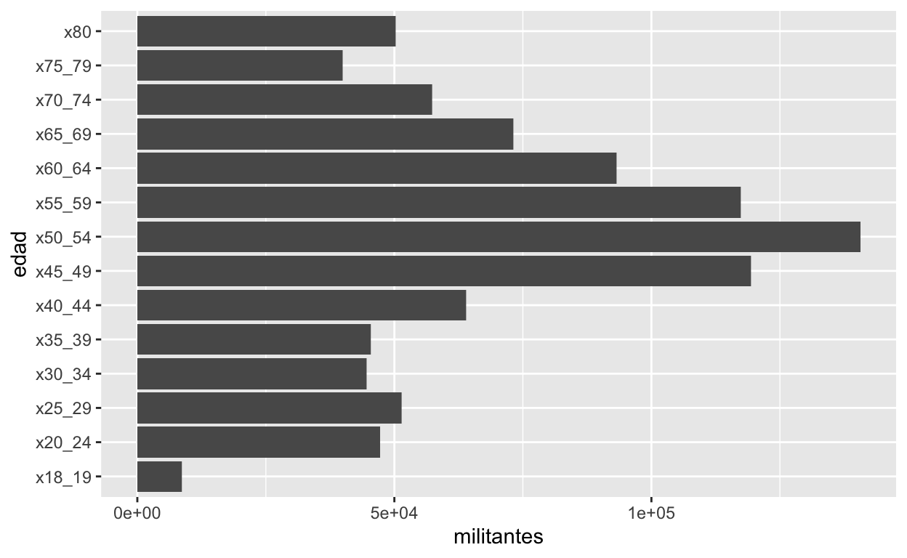
Hay ciertas cosas que debemos cambiar, por ejemplo:
- Cambiar cómo salen representados los rangos etarios.
- Cambiar la nomenclatura del eje x.
3. Escalas
Controla cómo los datos son representados. En este caso, ya tenemos definido cómo están dispuesto los ejes, pero quizás queremos obtener más información. Podemos agregar la variable “sexo” y esto será representado con distintos colores.
p +
geom_bar(stat = "identity")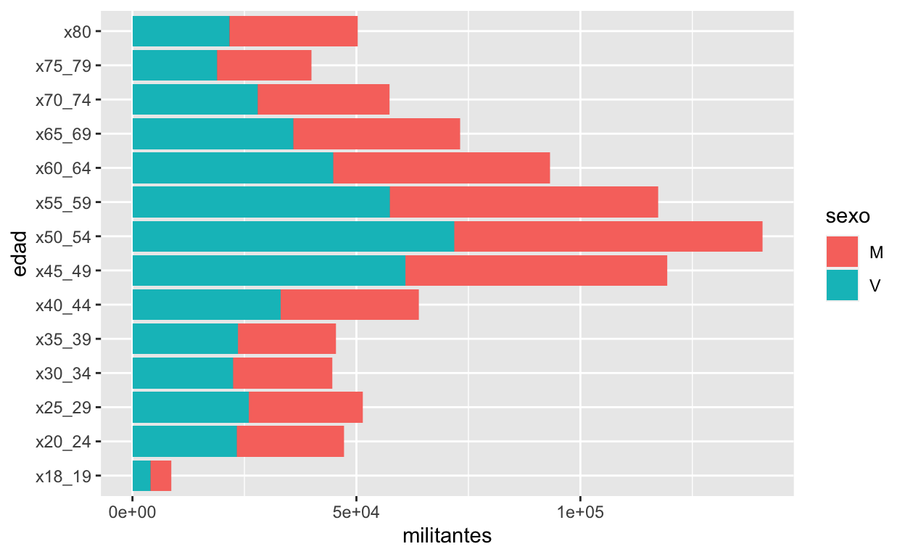
4. Posición
Esto no es exactamente lo que queremos. Las barras apiladas no son útiles para ver el conteo de los casos.
p +
geom_bar(stat = "identity", position = "dodge")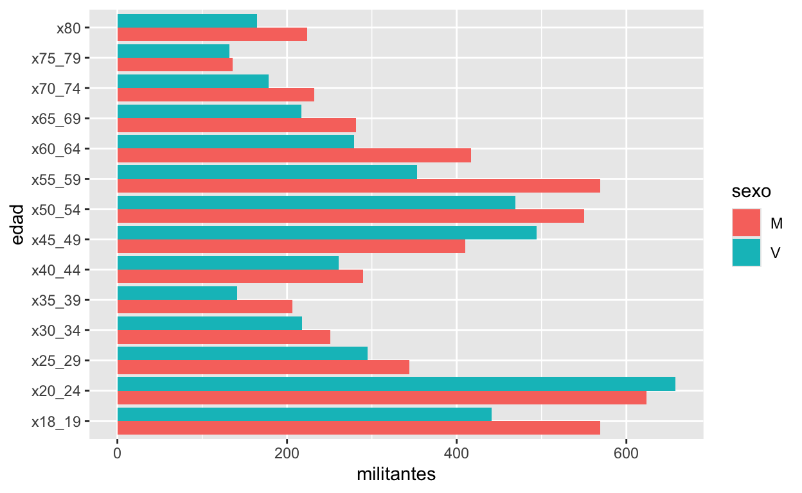
Podemos ver que además cambia la nomenclatura del eje x, ya que disminuimos el número de militantes por rango etario.
5. Sistema de coordenadas
El sistema de coordenadas no suele cambiar cuando trabajamos con este tipo de datos. Aun así, a veces lo usamos para dar “vuelta” la posición de los ejes.
p +
geom_bar(stat = "identity", position = "dodge") +
coord_flip()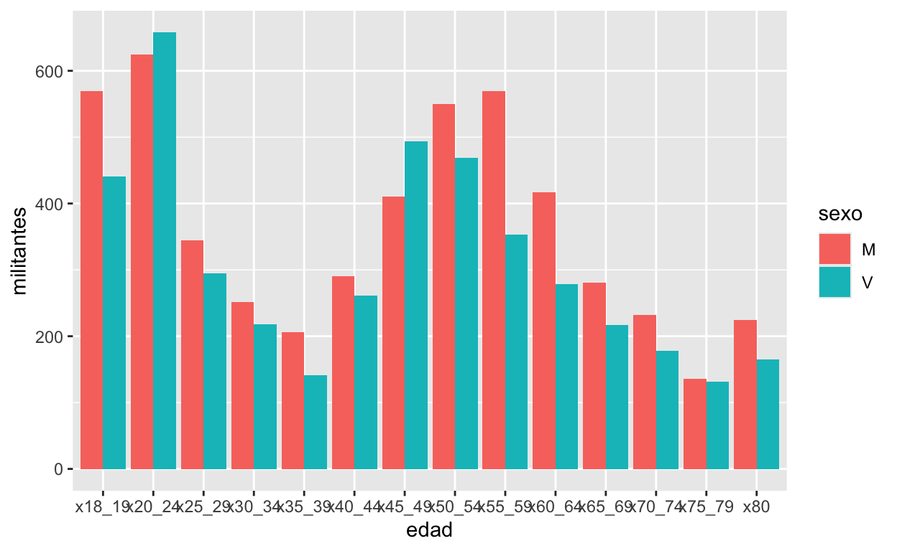
6. Faceting
Puede que no nos guste como está visualizado el gráfico y queremos separar los hombres de las mujeres. Para eso usamos facet.
p +
geom_bar(stat = "identity", position = "dodge") +
facet_wrap(facets = vars(sexo))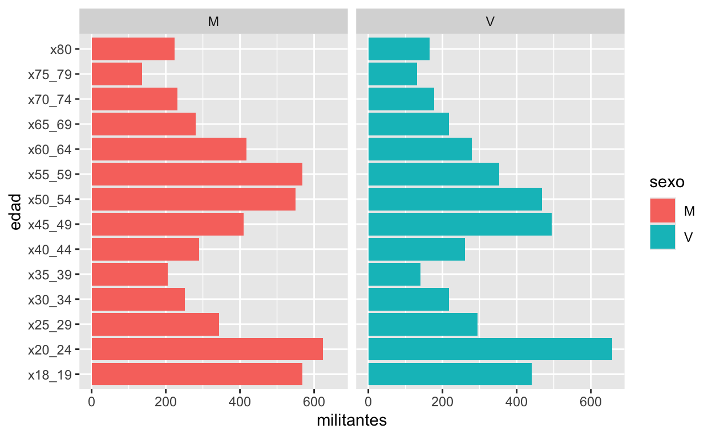
7. Leyendas, títulos y tema
Como les iba diciendo, uno puede mejorar los gráficos ocupando títulos, mejorando las categorías de los datos y el tema. Este último, se refiere a todas esas cuestiones “estéticas” del gráfico.
p +
geom_bar(stat = "identity", position = "dodge") +
facet_wrap(facets = vars(sexo)) +
labs(title = "Número de militantes de partidos políticos por género", subtitle = "Año 2016",
x = "Número de militantes", y = "Rangos etarios", caption = "Fuente: SERVEL.") +
theme_minimal()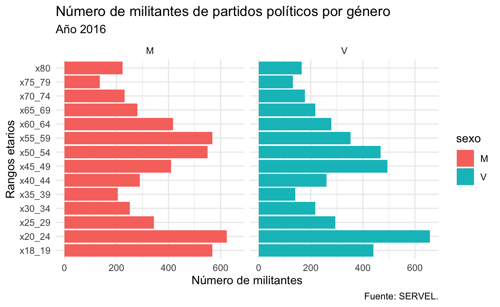
Para cambiar los rangos etarios, necesitamos cambiar la base de datos con la que estamos trabajando.
# Primero, veamos qué tipo de columna es "edad":
str(df_militantes)tibble [153,020 × 7] (S3: tbl_df/tbl/data.frame)
$ partido : chr [1:153020] "RENOVACION NACIONAL" "RENOVACION NACIONAL" "RENOVACION NACIONAL" "RENOVACION NACIONAL" ...
$ region : chr [1:153020] "DE TARAPACA" "DE TARAPACA" "DE TARAPACA" "DE TARAPACA" ...
$ comuna : chr [1:153020] "ALTO HOSPICIO" "ALTO HOSPICIO" "ALTO HOSPICIO" "ALTO HOSPICIO" ...
$ sexo : chr [1:153020] "M" "M" "M" "M" ...
$ total : num [1:153020] 132 132 132 132 132 132 132 132 132 132 ...
$ edad : chr [1:153020] "x18_19" "x20_24" "x25_29" "x30_34" ...
$ militantes: num [1:153020] 0 0 1 0 1 6 13 25 20 25 ...# Con esto en consideración, hacemos la transformación. Se recomienda crear una nueva variable:
df_militantes <- df_militantes %>%
mutate(rangos_etarios = str_remove(edad, "x"))
head(df_militantes)# A tibble: 6 × 8
partido region comuna sexo total edad militantes rangos_etarios
<chr> <chr> <chr> <chr> <dbl> <chr> <dbl> <chr>
1 RENOVACIO… DE TA… ALTO … M 132 x18_… 0 18_19
2 RENOVACIO… DE TA… ALTO … M 132 x20_… 0 20_24
3 RENOVACIO… DE TA… ALTO … M 132 x25_… 1 25_29
4 RENOVACIO… DE TA… ALTO … M 132 x30_… 0 30_34
5 RENOVACIO… DE TA… ALTO … M 132 x35_… 1 35_39
6 RENOVACIO… DE TA… ALTO … M 132 x40_… 6 40_44 # Ya eliminamos la x, ahora podemos cambiar el guión bajo por un guión:
df_militantes <- df_militantes %>%
mutate(rangos_etarios = str_remove(edad, "x"),
rangos_etarios = str_replace(rangos_etarios, "_", "-"))
head(df_militantes)# A tibble: 6 × 8
partido region comuna sexo total edad militantes rangos_etarios
<chr> <chr> <chr> <chr> <dbl> <chr> <dbl> <chr>
1 RENOVACIO… DE TA… ALTO … M 132 x18_… 0 18-19
2 RENOVACIO… DE TA… ALTO … M 132 x20_… 0 20-24
3 RENOVACIO… DE TA… ALTO … M 132 x25_… 1 25-29
4 RENOVACIO… DE TA… ALTO … M 132 x30_… 0 30-34
5 RENOVACIO… DE TA… ALTO … M 132 x35_… 1 35-39
6 RENOVACIO… DE TA… ALTO … M 132 x40_… 6 40-44 Volvemos al gráfico:
# Tenemos que crear nuevamente el objeto para que capte las transformaciones que realizamos:
p <- ggplot(df_militantes, aes(x = militantes, y = rangos_etarios, fill = sexo))
p +
geom_bar(stat = "identity", position = "dodge") +
facet_wrap(facets = vars(sexo)) +
labs(title = "Número de militantes de partidos políticos por género", subtitle = "Año 2016",
x = "Número de militantes", y = "Rangos etarios", caption = "Fuente: SERVEL.") +
theme_minimal()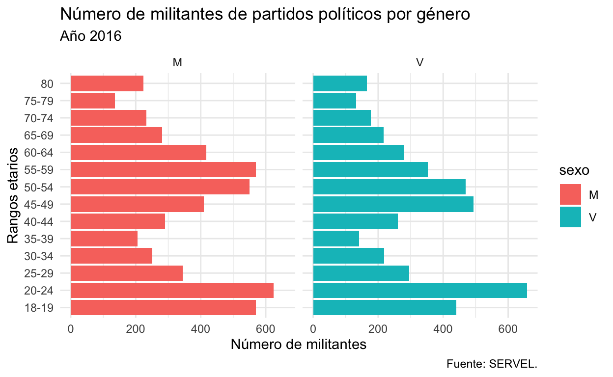
Otra cosa que podemos hacer es eliminar leyenda, ya que no aporta información. También, cambiaremos los títulos de los facets para que digan claramente “Mujeres” y “Varones”.
p +
geom_bar(stat = "identity", position = "dodge") +
facet_wrap(facets = vars(sexo)) +
labs(title = "Número de militantes de partidos políticos por género", subtitle = "Año 2016",
x = "Número de militantes", y = "Rangos etarios", caption = "Fuente: SERVEL.") +
guides(fill = "none") + # Tenemos que poner la escala que estamos usando para mostrar la variable sexo
theme_minimal()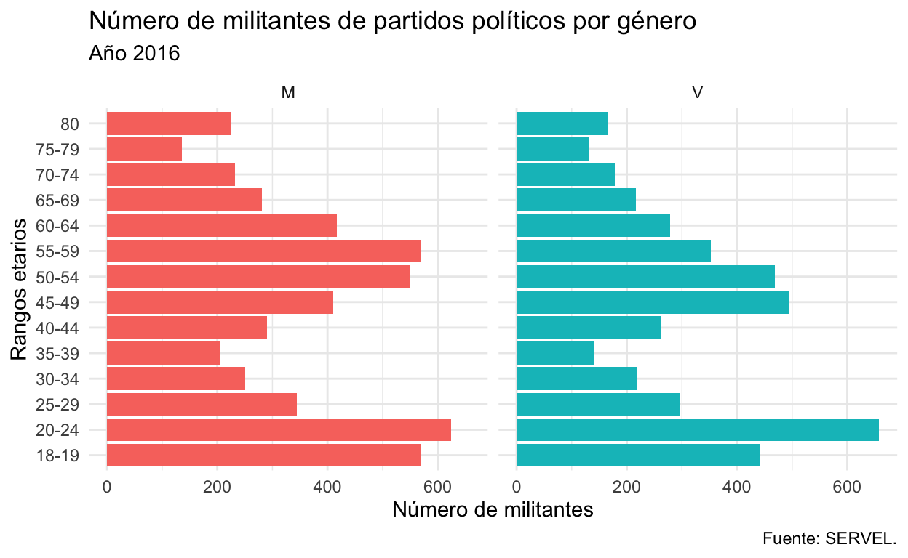
Cambiamos los títulos de los facets. Dependiendo de nuestros datos, podemos hacerlo directamente en el gráfico o renombrando las variables en la base de datos.
Primera opción:
df_militantes_s <- df_militantes %>%
mutate(sexo = str_replace_all(sexo, c("M" = "Mujeres", "V" = "Varones")))
m <- ggplot(df_militantes_s, aes(x = militantes, y = rangos_etarios, fill = sexo))
m +
geom_bar(stat = "identity", position = "dodge") +
facet_wrap(facets = vars(sexo)) +
labs(title = "Número de militantes de partidos políticos por género", subtitle = "Año 2016",
x = "Número de militantes", y = "Rangos etarios", caption = "Fuente: SERVEL.") +
guides(fill = "none") +
theme_minimal()
Segunda opción:
p +
geom_bar(stat = "identity", position = "dodge") +
facet_grid(cols = vars(sexo),
labeller = as_labeller(c('M' = "Mujeres", 'V' = "Varones"))) +
labs(title = "Número de militantes de partidos políticos por género", subtitle = "Año 2016",
x = "Número de militantes", y = "Rangos etarios", caption = "Fuente: SERVEL.") +
guides(fill = "none") +
theme_minimal()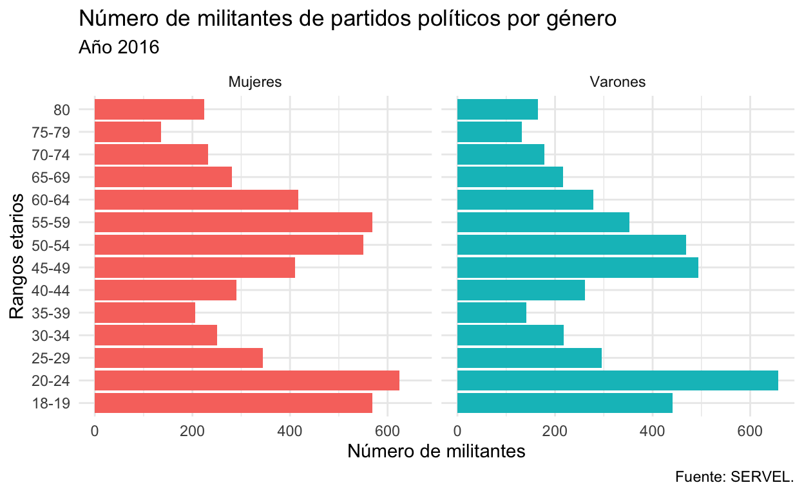
También podemos hacer ajustes al tema que estamos usando:
p +
geom_bar(stat = "identity", position = "dodge") +
facet_grid(cols = vars(sexo),
labeller = as_labeller(c('M' = "Mujeres", 'V' = "Varones"))) +
labs(title = "Número de militantes de partidos políticos por género", subtitle = "Año 2016",
x = "Número de militantes", y = "Rangos etarios", caption = "Fuente: SERVEL.") +
guides(fill = "none") +
theme_minimal() +
theme(text = element_text(family = "Roboto Condensed"), # Existe el tema theme_roboto en el paquete hrbrthemes.
title = element_text(face = "bold")) 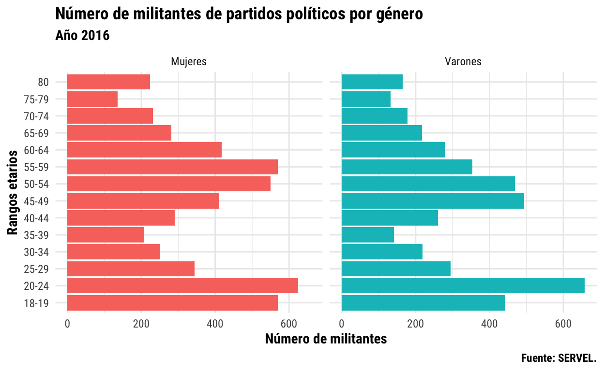
Cambiaremos los colores:
p +
geom_bar(stat = "identity", position = "dodge") +
scale_fill_manual(values = c("#d90429","#2b2d42")) +
facet_grid(cols = vars(sexo),
labeller = as_labeller(c('M' = "Mujeres", 'V' = "Varones"))) +
labs(title = "Número de militantes de partidos políticos por género", subtitle = "Año 2016",
x = "Número de militantes", y = "Rangos etarios", caption = "Fuente: SERVEL.") +
guides(fill = "none") +
theme_minimal() +
theme(text = element_text(family = "Roboto Condensed"), # Existe el tema theme_roboto en el paquete hrbrthemes.
plot.title = element_text(face = "bold"),
strip.text = element_text(colour = "#ef233c", face = "bold"),
strip.background = element_rect(fill = "#edf2f4", colour = F)) 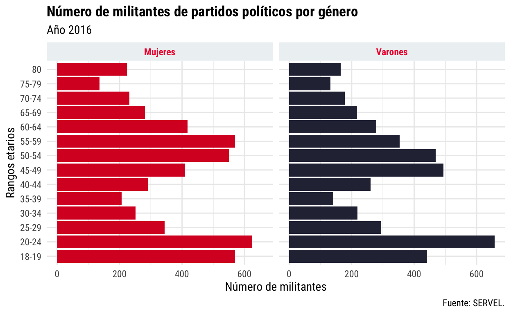
Podemos hacer nuestro tema, que será utilizado en el resto de los gráficos.
¿Qué graficaremos ahora?
Aquellos gráficos que nos permitirán observar la información de variables continuas.
Fuentes:
- R Markdown Website.
- Create awesome html table with
knitr::kableandkableExtra. - Explore your dataset in R.
- Grammar of graphics.
- Paletas de colores.
- Especificaciones de temas.